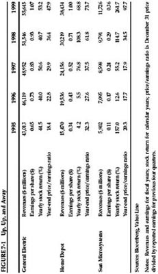
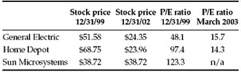

It requires a great deal of boldness and a great deal of caution to make a great fortune; and when you have got it, it requires ten times as much wit to keep it.
—Nathan Mayer Rothschild
In an ideal world, the intelligent investor would hold stocks only when they are cheap and sell them when they become overpriced, then duck into the bunker of bonds and cash until stocks again become cheap enough to buy. From 1966 through late 2001, one study claimed, $1 held continuously in stocks would have grown to $11.71. But if you had gotten out of stocks right before the five worst days of each year, your original $1 would have grown to $987.12. 1
Like most magical market ideas, this one is based on sleight of hand. How, exactly, would you (or anyone) figure out which days will be the worst days— before they arrive? On January 7, 1973, the New York Times featured an interview with one of the nation’s top financial forecasters, who urged investors to buy stocks without hesitation: “It’s very rare that you can be as unqualifiedly bullish as you can now.” That forecaster was named Alan Greenspan, and it’s very rare that anyone has ever been so unqualifiedly wrong as the future Federal Reserve chairman was that day: 1973 and 1974 turned out to be the worst years for economic growth and the stock market since the Great Depression. 2
Can professionals time the market any better than Alan Green-span? “I see no reason not to think the majority of the decline is behind us,” declared Kate Leary Lee, president of the market-timing firm of R. M. Leary & Co., on December 3, 2001. “This is when you want to be in the market,” she added, predicting that stocks “look good” for the first quarter of 2002. 3 Over the next three months, stocks earned a measly 0.28% return, underperforming cash by 1.5 percentage points.
Leary is not alone. A study by two finance professors at Duke University found that if you had followed the recommendations of the best 10% of all market-timing newsletters, you would have earned a 12.6% annualized return from 1991 through 1995. But if you had ignored them and kept your money in a stock index fund, you would have earned 16.4%. 4
As the Danish philosopher Søren Kierkegaard noted, life can only be understood backwards—but it must be lived forwards. Looking back, you can always see exactly when you should have bought and sold your stocks. But don’t let that fool you into thinking you can see, in real time, just when to get in and out. In the financial markets, hindsight is forever 20/20, but foresight is legally blind. And thus, for most investors, market timing is a practical and emotional impossibility. 5
Like spacecraft that pick up speed as they rise into the Earth’s stratosphere, growth stocks often seem to defy gravity. Let’s look at the trajectories of three of the hottest growth stocks of the 1990s: General Electric, Home Depot, and Sun Microsystems. (See Figure 7-1.)
In every year from 1995 through 1999, each grew bigger and more profitable. Revenues doubled at Sun and more than doubled at Home Depot. According to Value Line, GE’s revenues grew 29%; its earnings rose 65%. At Home Depot and Sun, earnings per share roughly tripled.
But something else was happening—and it wouldn’t have surprised Graham one bit. The faster these companies grew, the more expensive their stocks became. And when stocks grow faster than companies, investors always end up sorry. As Figure 7-2 shows:
A great company is not a great investment if you pay too much for the stock.
The more a stock has gone up, the more it seems likely to keep going up. But that instinctive belief is flatly contradicted by a fundamental law of financial physics: The bigger they get, the slower they grow. A $1-billion company can double its sales fairly easily; but where can a $50-billion company turn to find another $50 billion in business?
Growth stocks are worth buying when their prices are reasonable, but when their price/earnings ratios go much above 25 or 30 the odds get ugly:

FIGURE 7-2 Look Out Below

n/a: Not applicable; Sun had net loss in 2002.
Sources: www.morningstar.com, yahoo.marketguide.com
Even many corporate leaders fail to understand these odds (see sidebar on p. 184). The intelligent investor, however, gets interested in big growth stocks not when they are at their most popular—but when something goes wrong. In July 2002, Johnson & Johnson announced that Federal regulators were investigating accusations of false record keeping at one of its drug factories, and the stock lost 16% in a single day. That took J & J’s share price down from 24 times the previous 12 months’ earnings to just 20 times. At that lower level, Johnson & Johnson might once again have become a growth stock with room to grow—making it an example of what Graham calls “the relatively unpopular large company.” 9
This kind of temporary unpopularity can create lasting wealth by enabling you to buy a great company at a good price.
HIGH POTENTIAL FOR HYPE POTENTIAL
Investors aren’t the only people who fall prey to the delusion that hyper-growth can go on forever. In February 2000, chief executive John Roth of Nortel Networks was asked how much bigger his giant fiber-optics company could get. “The industry is growing 14% to 15% a year,” Roth replied, “and we’re going to grow six points faster than that. For a company our size, that’s pretty heady stuff.” Nortel’s stock, up nearly 51% annually over the previous six years, was then trading at 87 times what Wall Street was guessing it might earn in 2000. Was the stock overpriced? “It’s getting up there,” shrugged Roth, “but there’s still plenty of room to grow our valuation as we execute on the wireless strategy.” (After all, he added, Cisco Systems was trading at 121 times its projected earnings!) 1
As for Cisco, in November 2000, its chief executive, John Chambers, insisted that his company could keep growing at least 50% annually. “Logic,” he declared, “would indicate this is a breakaway.” Cisco’s stock had come way down—it was then trading at a mere 98 times its earnings over the previous year—and Chambers urged investors to buy. “So who you going to bet on?” he asked. “Now may be the opportunity.” 2
Instead, these growth companies shrank—and their overpriced stocks shriveled. Nortel’s revenues fell by 37% in 2001, and the company lost more than $26 billion that year. Cisco’s revenues did rise by 18% in 2001, but the company ended up with a net loss of more than $1 billion. Nortel’s stock, at $113.50 when Roth spoke, finished 2002 at $1.65. Cisco’s shares, at $52 when Chambers called his company a “break-away,” crumbled to $13.
Both companies have since become more circumspect about forecasting the future.
“Put all your eggs into one basket and then watch that basket,” proclaimed Andrew Carnegie a century ago. “Do not scatter your shot…. The great successes of life are made by concentration.” As Graham points out, “the really big fortunes from common stocks” have been made by people who packed all their money into one investment they knew supremely well.
Nearly all the richest people in America trace their wealth to a concentrated investment in a single industry or even a single company (think Bill Gates and Microsoft, Sam Walton and Wal-Mart, or the Rockefellers and Standard Oil). The Forbes 400 list of the richest Americans, for example, has been dominated by undiversified fortunes ever since it was first compiled in 1982.
However, almost no small fortunes have been made this way—and not many big fortunes have been kept this way. What Carnegie neglected to mention is that concentration also makes most of the great failures of life. Look again at the Forbes “Rich List.” Back in 1982, the average net worth of a Forbes 400 member was $230 million. To make it onto the 2002 Forbes 400, the average 1982 member needed to earn only a 4.5% average annual return on his wealth—during a period when even bank accounts yielded far more than that and the stock market gained an annual average of 13.2%.
So how many of the Forbes 400 fortunes from 1982 remained on the list 20 years later? Only 64 of the original members—a measly 16%—were still on the list in 2002. By keeping all their eggs in the one basket that had gotten them onto the list in the first place—once-booming industries like oil and gas, or computer hardware, or basic manufacturing—all the other original members fell away. When hard times hit, none of these people—despite all the huge advantages that great wealth can bring—were properly prepared. They could only stand by and wince at the sickening crunch as the constantly changing economy crushed their only basket and all their eggs. 10
You might think that in our endlessly networked world, it would be a cinch to build and buy a list of stocks that meet Graham’s criteria for bargains (p. 169). Although the Internet is a help, you’ll still have to do much of the work by hand.
Grab a copy of today’s Wall Street Journal, turn to the “Money & Investing” section, and take a look at the NYSE and NASDAQ Scorecards to find the day’s lists of stocks that have hit new lows for the past year—a quick and easy way to search for companies that might pass Graham’s net-working-capital tests. (Online, try http://quote. morningstar.com/highlow.html?msection=HighLow.)
To see whether a stock is selling for less than the value of net working capital (what Graham’s followers call “net nets”), download or request the most recent quarterly or annual report from the company’s website or from the EDGAR database at www.sec.gov. From the company’s current assets, subtract its total liabilities, including any preferred stock and long-term debt. (Or consult your local public library’s copy of the Value Line Investment Survey, saving yourself a costly annual subscription. Each issue carries a list of “Bargain Basement Stocks” that come close to Graham’s definition.) Most of these stocks lately have been in bombed-out areas like high-tech and telecommunications.
As of October 31, 2002, for instance, Comverse Technology had $2.4 billion in current assets and $1.0 billion in total liabilities, giving it $1.4 billion in net working capital. With fewer than 190 million shares of stock, and a stock price under $8 per share, Comverse had a total market capitalization of just under $1.4 billion. With the stock priced at no more than the value of Comverse’s cash and inventories, the company’s ongoing business was essentially selling for nothing. As Graham knew, you can still lose money on a stock like Comverse—which is why you should buy them only if you can find a couple dozen at a time and hold them patiently. But on the very rare occasions when Mr. Market generates that many true bargains, you’re all but certain to make money.
Investing in foreign stocks may not be mandatory for the intelligent investor, but it is definitely advisable. Why? Let’s try a little thought experiment. It’s the end of 1989, and you’re Japanese. Here are the facts:
In 1989, in the land of the rising sun, you can only conclude that investing outside of Japan is the dumbest idea since sushi vending machines. Naturally, you put all your money in Japanese stocks.
The result? Over the next decade, you lose roughly two-thirds of your money.
The lesson? It’s not that you should never invest in foreign markets like Japan; it’s that the Japanese should never have kept all their money at home. And neither should you. If you live in the United States, work in the United States, and get paid in U.S. dollars, you are already making a multilayered bet on the U.S. economy. To be prudent, you should put some of your investment portfolio elsewhere—simply because no one, anywhere, can ever know what the future will bring at home or abroad. Putting up to a third of your stock money in mutual funds that hold foreign stocks (including those in emerging markets) helps insure against the risk that our own backyard may not always be the best place in the world to invest.